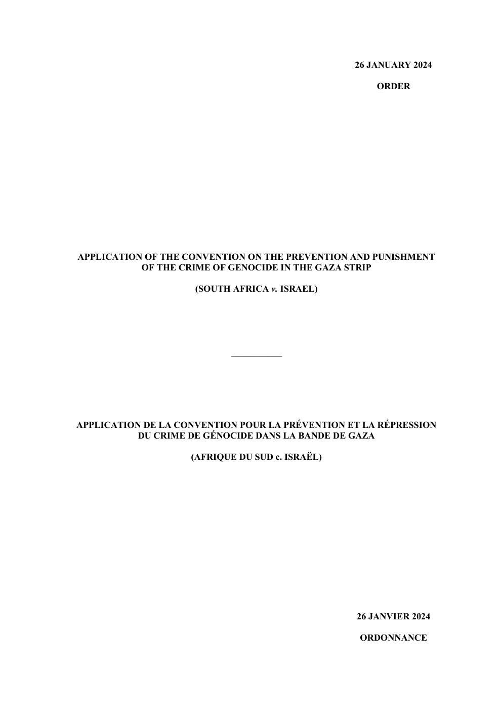
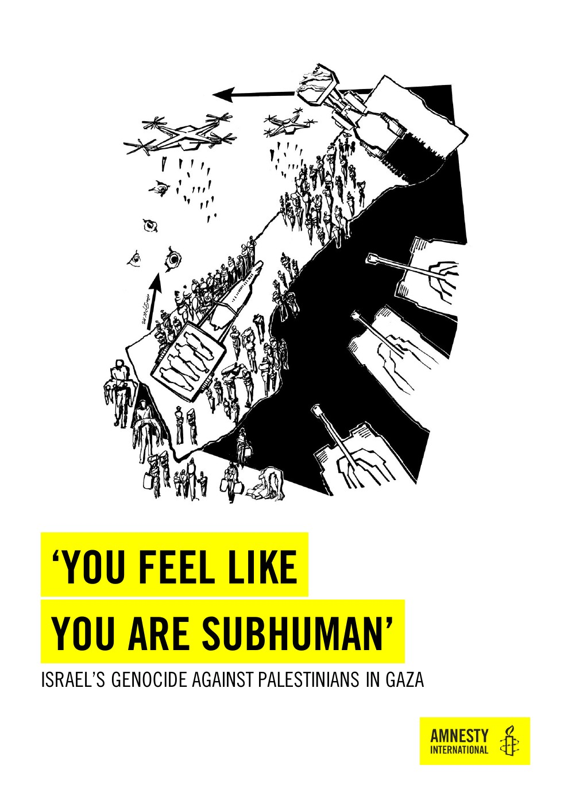

5:59 · 2 OPERE
About the “genocide” in Gaza...
Il filo del discorso
Haviv Rettig Gur propone una propria interpretazione della strategia israeliana a Gaza e contesta l’accusa di genocidio. Il discorso passa dalla condotta militare alla definizione giuridica del termine, richiamando il procedimento Sudafrica contro Israele, il caso Gambia contro Myanmar e un rapporto di Amnesty International. Le valutazioni dei documenti e le affermazioni sui procedimenti sono quelle del relatore. I due documenti collegati sono identificazioni probabili: vengono nominati Amnesty e una decisione sulle misure provvisorie della Corte internazionale di giustizia, ma non sono letti titolo completo e data. Il rapporto Amnesty del 5 dicembre 2024 e l’ordinanza CIG del 26 gennaio 2024 sono disponibili nelle rispettive fonti ufficiali. Un provvedimento sulle misure provvisorie va distinto da una sentenza di merito; l’interpretazione proposta nel video va confrontata con il testo dei documenti. Gli altri atti evocati senza estremi non vengono trasformati in citazioni bibliografiche precise.
I libri nel discorso

Application of the Genocide Convention in the Gaza Strip (South Africa v. Israel) — Order of 26 January 2024
Identificazione probabile
Note sul riferimento
Copertina: Frontespizio originale bilingue dell’ordinanza CIG del 26 gennaio 2024, copia integrale di 29 pagine ospitata dal Ministero della giustizia sudafricano. Frontespizio di un atto giudiziario, non di un libro.
Pagina originale del documento identificato; nessuna edizione materialmente mostrata nel video è stata confermata.
Riferimento a una decisione della CIG sulle misure provvisorie nel caso Sudafrica contro Israele. La data non è pronunciata: l’associazione all’ordinanza del 26 gennaio 2024 resta probabile; non è una decisione di merito.

‘You Feel Like You Are Subhuman’: Israel’s Genocide Against Palestinians in Gaza
Identificazione probabile
Note sul riferimento
Frontespizio: Rapporto originale in inglese, Amnesty International, 5 dicembre 2024, MDE 15/8668/2024, pagina 1.
Pagina originale del documento identificato. L’identificazione nel video è probabile; nessuna edizione materialmente mostrata è confermata.
Il relatore menziona il rapporto di Amnesty International sul genocidio a Gaza. Il titolo completo non è letto: identificazione probabile del rapporto MDE 15/8668/2024 del 5 dicembre 2024. Le sue considerazioni non sostituiscono le conclusioni del rapporto.